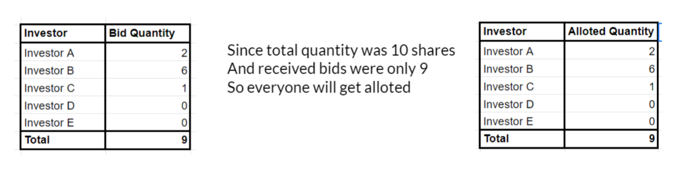
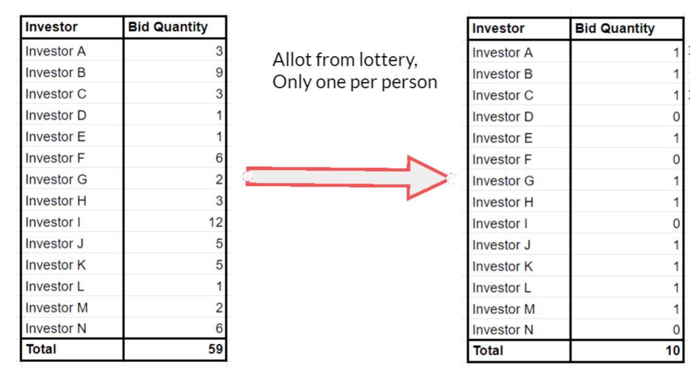
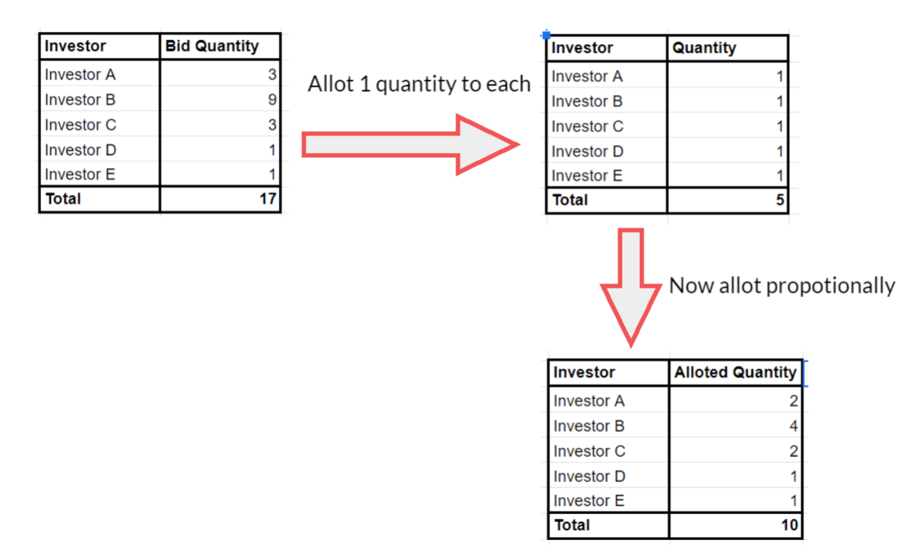
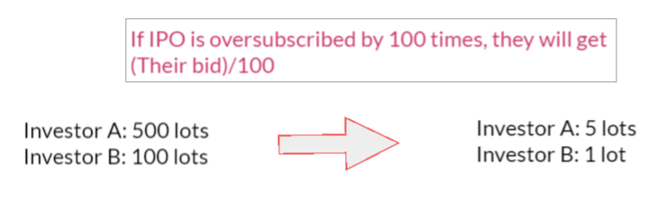

2. How are shares alloted in an IPO?
You may have all seen some recent IPOs with excellent listing gains, but many of you may not have been alloted these IPOs even after bidding in multiple lots.
Well, lets first discuss the process of allotment of shares, and then discuss how to increase your chances.
Types of Investors in IPOs:#
There are 3 types of investors in IPOs and all of them are alloted differently.
1. Retail Investor: A Retail Investor is an individual who applies for an amount less than 2 lakh. These are people like you and me.
2. Non-Institutional Investors (NIIs): These are the High Net-Worth Individuals(HNIs), eligible NRIs, companies, and trusts, etc who bid for more than Rs. 2 lakh.
3. Qualified Institutional Bidders (QIBs): Financial Institutions, Banks, FIIs and Mutual Funds who are registered with SEBI are called QIBs. They usually apply in very high quantities.
Out of the total number of shares, 35% are kept for Retail Investors, 15% are kept for NII and 50% for QIB.
Process of Allotment For Retail Investors:#
Now let us talk about how the shares are alloted.
Let us assume that the total number of shares to be alloted in the IPO is 10.
a. Undersubscription:#
Under-Subscription means that the number of bids for the IPO is less than the total number of shares to be alloted.
So if there are only 9 bids for 10 shares, everyone gets alloted! 
Also, remember if there is less than 90% subscription, then IPO itself is cancelled!
b. Large Oversubscription:#
Large Over-Subscription happens in the case like Burger King(Over-Subscribed 192 times) and Mrs. Bector Foods (Over-Subscribed 198 times).
In these IPOs, the SEBI will randomly allot only 1 lot to the lucky people. The allotment is fully randomized and computerized.
Here we got 59 bids for 10 shars, so 10 lucky people will be alloted 1 share each. Nobody will get 2 lots.

c. Small Oversubscription:#
Now this is a bit comples to understand.
Since we need to divide 10 shares amongst 5 people who have bid a total of 17 times, so what is going to happen is that 1 lot will be alloted to each person first.

Then the rest of the lots are going to be alloted propotionally to the remaining people.
Now the excess bids with Investor A, B & C are 2,6 & 2 so they will get alloted propotionally 1,3 & 1 share more.
Process of Allotment For NII:#
The process of allotment for NIIs takes place on a proportionate basis. Means if an IPO is oversubscribed 20 times, and a NII has bid for 100 lots, he will get alloted 100/20=5 lots.

Also, NIIs are allowed to withdraw their bid until last day of allotment! Retial investors are not allowed to withdraw after the date for subscription closes.
For Intraday , Short Term and Long term buy/sell calls you can consider joining my Premium Group On Whatsapp (click here)
Subscribe to my channel for more! Thanks in advance!
comments powered by Disqus